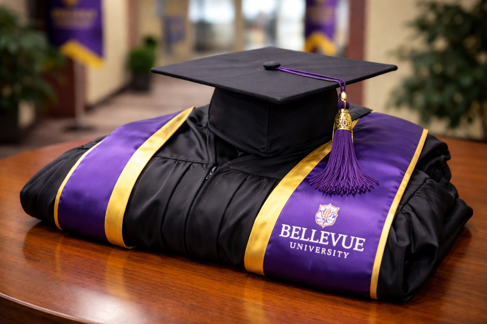
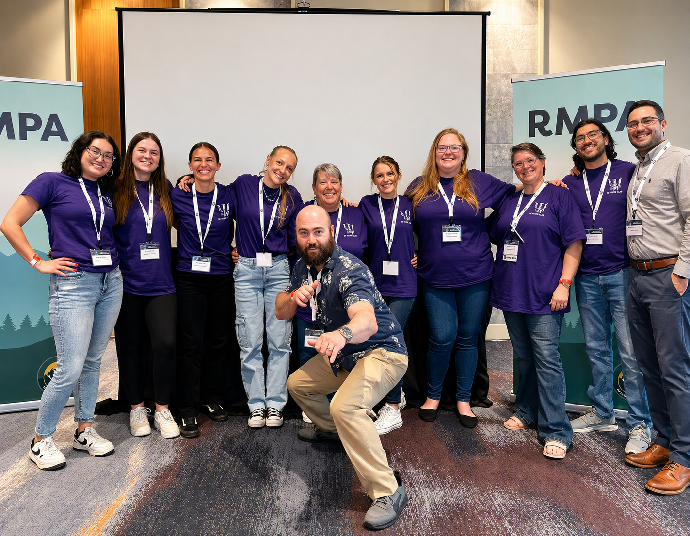
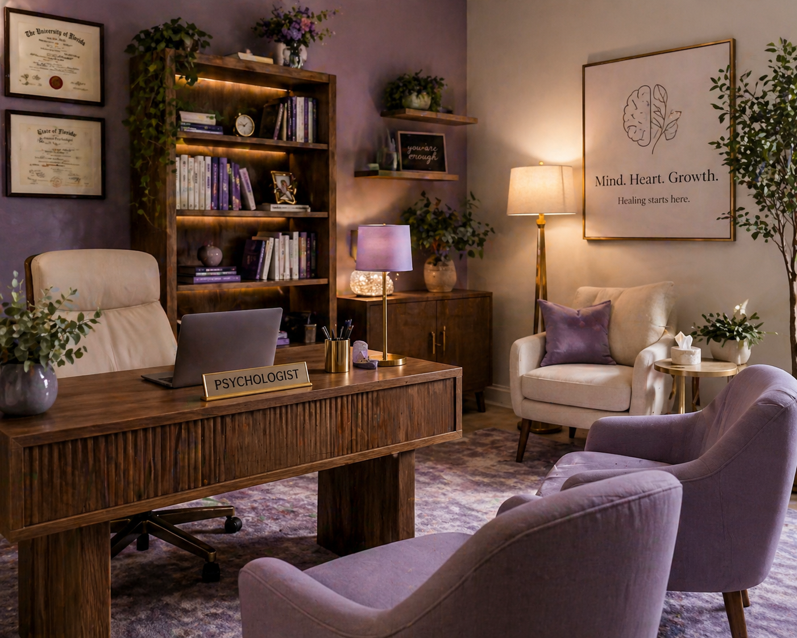
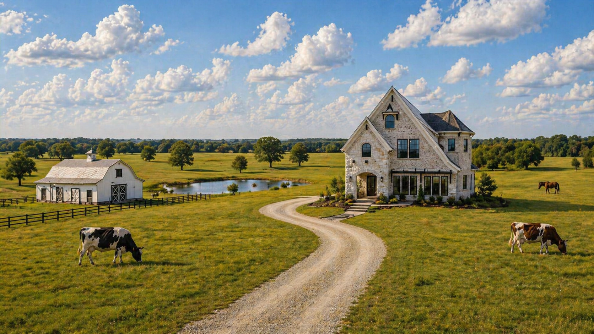

Now

First in her family to graduate college
A major personal accomplishment that marked a turning point and confirmed what persistence can achieve.
A story-driven bioSite
A wife, mother, student, and future psychologist building a life rooted in growth, family, and purpose.
A timeline of Samantha's journey from major milestones to the future she is building.
Now

A major personal accomplishment that marked a turning point and confirmed what persistence can achieve.
In Progress

Current graduate-school progress that reflects her commitment to learning, service, and long-term growth.
Next Goal

Her professional goal is to build a private practice that offers meaningful, practical support to others.
Long-Term Vision

A long-range family vision centered on travel, shared experiences, and eventually building a homestead.